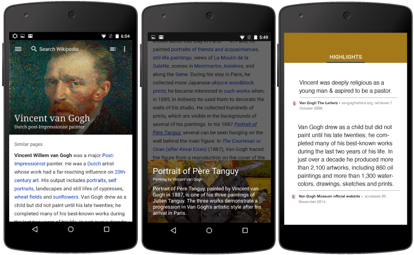

I lead a project to update the typography on Wikipedia Desktop & mobile web. This included new font specifications, leading and sizing for headings & body copy in 235 different languages including non latin scripts such as Hebrew, Arabic & Navajo. This project was tested out on mobile for 6 months before being brought to desktop.
We created link previews to support quick investigation of links on Wikipedia.
This feature is currently testing on Greek and Catalan Wikipedia. It required 3 different layouts to support a cohesive image text layout. The key question was ‘How much content is needed for a user to get context?'

The native Android app is a critical experimentation space for us due to the large alpha and beta channels, which are valuable feedback channels. The platform integration with Google Now is useful for us to show wikipedia content in search or in the context of other properties.

We shipped a native iOS app to create new forms of presentation, styling, sharing, discovery and casual contributions. We worked towards making the first fold assistive and removing the noise. Articles have prominent lead image, a short description and a clean first sentence to let users quickly answer the ‘what is this’ question. All saved pages are available when a user wants to read them during a commute or when offline. ‘Location’ is leveraged to show nearby articles and ‘share a fact’ lets users share a sentence on their favorite social networks.